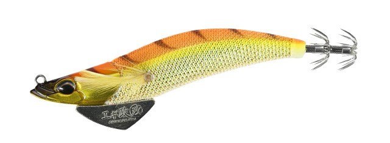
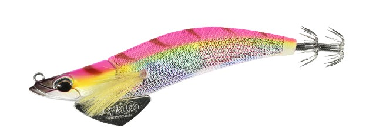
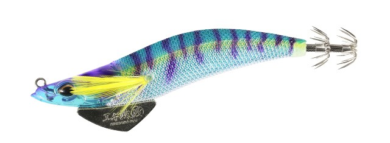
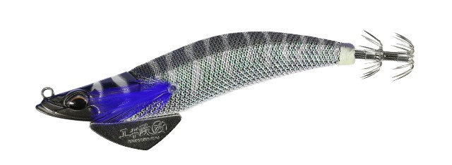

エギ政改
（エギ）
エギ政改はDUOのエギです。
ラインアイのポジションが異なる2モデル設計（SHALLOW／NORMAL）を採用し、2.5号〜3.5号のサイズ展開と組み合わせることで、シャローから深場までを1シリーズでカバーできるのが最大の魅力です。

画像出典:DUO公式HP
スペック
- メーカー
- DUO
- タイプ
- エギ（NORMALタイプ）
- サイズ
- 3.0号
- 重さ
- 16g
- 沈下速度
- 約3.5秒/m
- フック
- BKK Φ0.6
- ターゲット
- アオリイカ
- 価格
- 1,155円（税込）
- 発売
- 2026年8月
▼今すぐチェック

エギ政改の特徴
ラインアイ位置の異なる2モデル設計で、シャローから深場までを1シリーズで対応
-
SHALLOW／NORMALのラインアイ位置違い設計
ラインアイのポジションが異なるSHALLOWとNORMALの2モデルを用意。同じ号数でも沈下速度が大きく変わり、浅場から深場まで状況に応じて選べる。
-
BKK製アシストフックで高い貫通力と耐久性
イギリスの高品質フックブランドBKK製のフックを採用。細軸ながら貫通力が高く、アオリイカの身切れしにくいフックアップを狙える。
-
2.5号〜3.5号の号数展開で細かくレンジ調整
3サイズ×2モデルの組み合わせにより、エギ1シリーズだけで沈下速度のバリエーションを細かく選び分けられる。
エギ政改の使い方
基本はシャクリ&フォールの繰り返し。SHALLOWは沈下速度6.0〜7.0秒/mとスローなため、浅場でじっくりフォールの時間を長く取りたい時に向く。NORMALは3.5秒/mとベーシックな沈下速度で、オールラウンドに使いやすい。
ポイントの水深や潮流の速さに合わせてモデルと号数を選び、着底までのカウントを一定にしながら同じレンジを繰り返し探ると、アタリを拾いやすくなります。
エギ政改の得意な状況
浅場の藻場やサラシではSHALLOWでゆっくりフォールを見せたい状況、潮流のある堤防や深場ではNORMALでテンポよく探りたい状況、どちらにも対応できるのが強み。
エギ1シリーズでモデルと号数を揃えておけば、フィールドの水深に合わせてその場でセッティングを変えられる。初めて入るポイントでレンジ感を探りたい場面でも選びたい1本です。
ワンポイント
浅場でアオリイカの活性が高い時は、SHALLOWでフォールの時間を長く見せると抱かせの間を作りやすくなります。
潮が速い場所では、NORMALの号数を一段上げて沈下速度を補うと、ボトムが取りやすくなります。
モデルの使い分け
| モデル／サイズ | 重さ | 沈下速度 | 価格（税込） |
|---|---|---|---|
| SHALLOW 2.5号 | 10g | 7.0秒/m | 1,100円 |
| SHALLOW 3.0号 | 15g | 6.0秒/m | 1,155円 |
| SHALLOW 3.5号 | 20g | 6.0秒/m | 1,210円 |
| NORMAL 2.5号 | 11g | 3.5秒/m | 1,100円 |
| NORMAL 3.0号（本記事のモデル） | 16g | 3.5秒/m | 1,155円 |
| NORMAL 3.5号 | 22g | 3.5秒/m | 1,210円 |
エギ政改はSHALLOW・NORMALの2モデル×2.5号〜3.5号の全6バリエーション展開。沈下速度は3.5〜7.0秒/mまで幅広くカバーしており、フィールドの水深や潮流の速さに合わせて選べるのが強みだ。
オススメカラー
エギ政改は全18色展開。状況に合わせやすいオススメカラーを厳選して紹介します。

金スギオレンジマズメ時や濁り潮に強い、金テープ×オレンジの高アピールカラー。

カラフルピンク澄み潮・デイゲームでも使いやすいナチュラル系のピンクカラー。

UVクリアブルーシュリンプUV発光でアピール力を高めたクリア系カラー。ハイプレッシャー下にも。

ブラックシュリンプシルエットをしっかり出したいナイトゲーム・濁り潮向けのカラー。
画像出典:DUO公式HP
エギ政改に似ているルアー
-
 エギ王Kディープ
ヤマシタ
詳細はこちら＞
エギ王Kディープ
ヤマシタ
詳細はこちら＞
同じ2.5〜3.5号展開のディープタイプエギ。深場・激流特化という点で、より深いレンジを狙いたい時の選択肢になる1本。